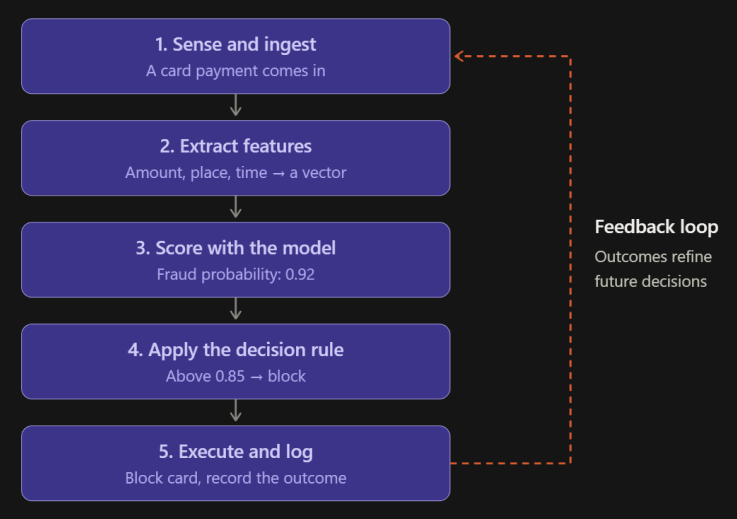
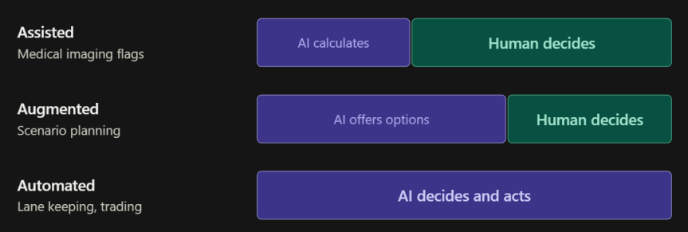

AI Decision Making

1. The 5-Step AI Decision Pipeline
- What it is: The sequential stages an AI system goes through to convert raw data into a chosen action.
- Core Stages:
- Environmental Sensing & Ingestion: Collecting raw inputs like text, camera feeds, or sensor logs.
- Feature Extraction & Vector Representation: Translating inputs into numerical vectors (embeddings) so computers can mathematically process them.
- Model Scoring & Inference: Passing vectors through neural networks or trees to calculate probability/utility scores.
- Rule Evaluation & Decision Boundary Application: Mapping probabilities to actions using threshold logic or policy functions.
- Execution & Closed-Loop Feedback: Executing the final choice and logging the outcome to refine future iterations.
- Sources:
- Teradata Insights – AI Decision-Making: How It Works, Examples, and Best Practices
- Veritis – Using AI in Decision Making: Process and Automation Paradigms
2. 3 Core Paradigms of AI Decision Logic
- How AI evaluates options:
- Probabilistic / Classification Decisions: Assigns statistical likelihoods based on historical training data (e.g., medical diagnostic tools).
- Sequential / Reinforcement Decisions: Balances immediate gains against future consequences using Markov Decision Processes and Q-learning (e.g., autonomous drone navigation).
- Optimization Decisions: Uses linear programming and heuristics to pick mathematically optimal actions under strict resource constraints (e.g., logistics delivery routing).
- Sources:
- MIT Sloan School of Management – A Framework for Determining When AI Can Make Decisions
- IBM Tech Guides – What is Reinforcement Learning and Sequential Decision Making?
3. Modes of AI Execution (Human Control Levels)
- Assisted Intelligence: AI automates repetitive calculations while humans make the final call (e.g., medical imaging flags).
- Augmented Intelligence: AI actively collaborates by offering predictive scenarios and option matrices to help human decisions.
- Automated / Agentic Intelligence: The AI evaluates, decides, and executes in real time without human intervention (e.g., self-driving lane keeping or high-frequency trading).
- Sources:
- Teradata Insights – AI Decision-Making: How It Works, Examples, and Best Practices
- Veritis – Using AI in Decision Making: Process and Automation Paradigms
